Abra o Tinkercad

Foto da tela.
No navegador, vá para tinkercad.com e entre com a sua conta, como na Aula 1.
Sem entrar, você até consegue mexer, mas nada fica salvo: ao fechar a aba, a peça some.
- Não tenho conta
- Chame o professor. Se a escola te deu um código de turma, ele vai te dizer onde usá-lo — não clique em Inscrever-se por conta própria.
- Esqueci minha senha
- Chame o professor antes de criar outra conta. Conta nova começa vazia, e o que você fez na aula passada fica na antiga.
- Minha página abriu em inglês
- Role até o rodapé da página e troque o idioma para Português: todos os nomes desta aula são os de português.
Clique no botão Criar


O clipe repete sozinho. Repare onde o cursor vai antes de clicar.
Foto da tela.
No canto de cima à direita, ao lado da bolinha da sua conta, clique no botão branco + Criar.
Abre um menuzinho com três linhas.
- Não acho o botão Criar
- Ele fica na faixa azul do alto da página, bem à direita, logo antes da bolinha da sua conta.
- Cliquei e não abriu nada
- Clique uma vez só, em cima da palavra Criar. Dois cliques rápidos abrem e fecham o menu na mesma hora.
- Abriu outra coisa
- Você clicou na bolinha da conta, que fica ao lado. Feche apertando Esc e clique um pouco mais para a esquerda.
Escolha Projeto 3D

Foto da tela.
No menuzinho que abriu, clique na primeira linha: Projeto 3D — a do desenho de cubo, marcada de vermelho na figura.
O Tinkercad abre o editor e dá ao projeto um nome sorteado, meio esquisito. Deixe assim: no último passo você troca.
- Cliquei em Circuitos sem querer
- Volte com a seta ⟵ do navegador e clique de novo em + Criar, escolhendo a primeira linha.
- A tela ficou branca e não carrega
- O Tinkercad é pesado. Espere até meio minuto. Se continuar branca, recarregue com F5.
- Abriu um projeto que eu já tinha
- Você clicou numa capa da lista em vez do botão. Volte e use o + Criar do canto de cima.
Arraste um Cilindro para o plano
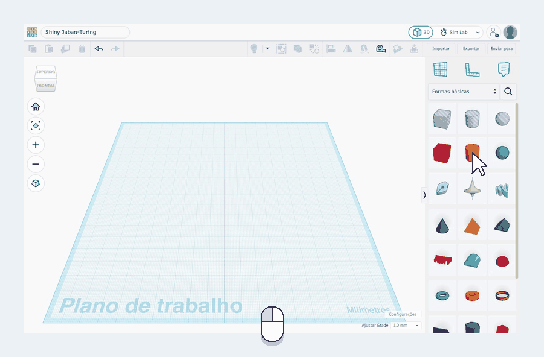
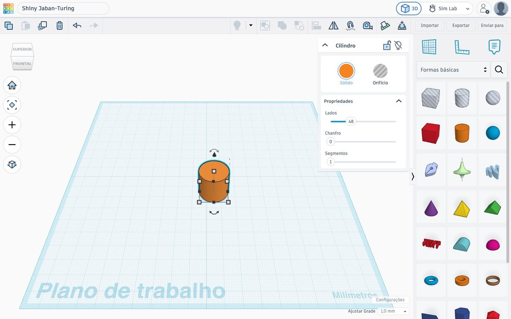
O clipe repete sozinho. Repare onde o cursor vai antes de clicar.
Foto da tela.
Na coluna da direita, a forma laranja do meio da segunda fileira é o Cilindro. (A de cima, cinza listrada, é o cilindro-buraco: hoje você pega a laranja.)
Segure o botão esquerdo em cima dela, arraste até o meio do plano e solte.
Abre o painel Cilindro, com Lados, Chanfro e Segmentos. Não tem campo de medida como a Caixa tinha: o tamanho do cilindro se muda de outro jeito, nos próximos passos.
- Peguei o cilindro cinza listrado
- Esse é o buraco. Aperte Delete e arraste o laranja, o da segunda fileira.
- O cilindro não parou no plano
- Se a peça caiu longe, ela ainda está no plano: clique nela e arraste. O que importa é estar solta no plano, sem cobrir outra peça.
- Não apareceu o painel
- Clique uma vez no cilindro: o painel abre quando ele está selecionado.
Clique na alça do canto
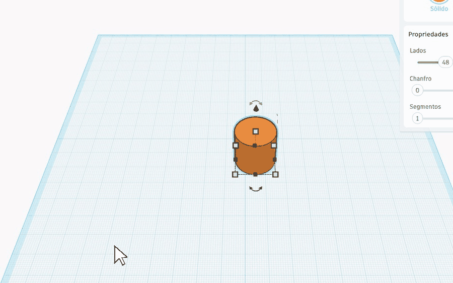
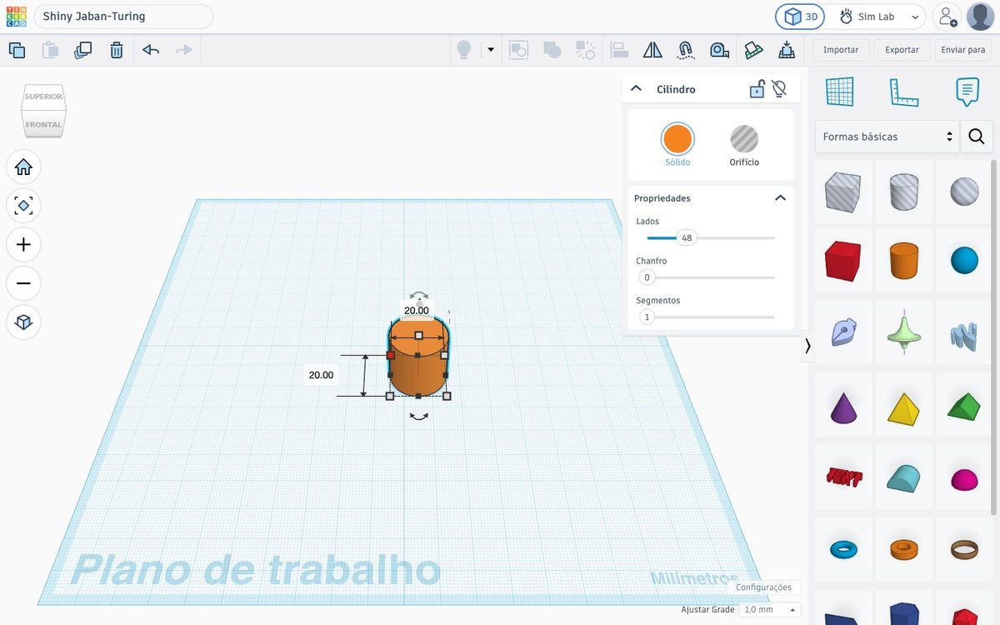
O clipe repete sozinho. Repare onde o cursor vai antes de clicar.
Foto da tela.
Em volta do cilindro há quadradinhos brancos — são as alças. Clique no quadradinho do canto de cima à esquerda.
Aparecem dois números no plano: um em cima do cilindro e outro à esquerda. São as medidas dele, em milímetro (o cilindro nasce com 20).
O número de cima é a largura; o da esquerda é o comprimento.
- Não apareceu número nenhum
- Você clicou em outro quadradinho ou fora da peça. Clique no cilindro de novo e depois no quadradinho de cima à esquerda da base.
- Apareceu um número só, no meio
- Esse é o quadradinho do meio de cima: ele mede a altura (passo 8). Hoje o certo é o do canto.
- Arrastei o quadradinho e a peça mudou de tamanho
- Sem problema: vamos digitar o tamanho exato agora. Mas clique só uma vez, sem arrastar.
Largura = 50
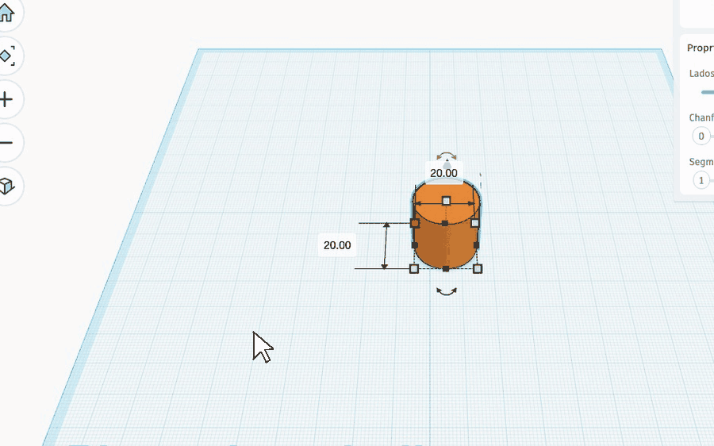
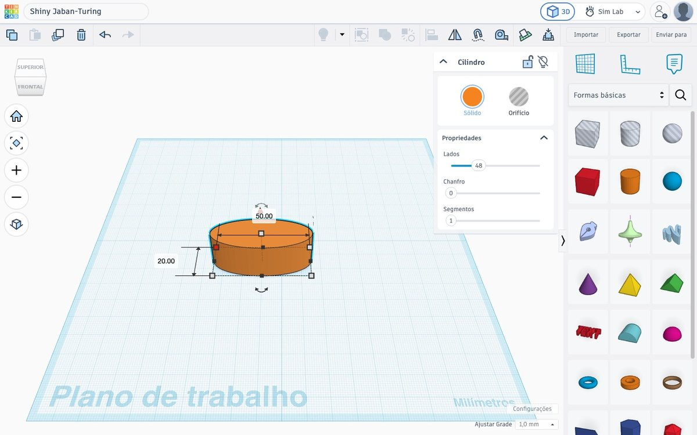
O clipe repete sozinho. Repare onde o cursor vai antes de clicar.
Foto da tela.
Clique no número de cima. Ele vira um campo de escrever. Apague o 20, escreva 50 e aperte Enter.
O cilindro fica mais largo. O número da esquerda continua 20: ele mede outra direção.
- Digitei e nada mudou
- Falta o Enter no fim. Sem ele o número não vale.
- O número ficou estranho (tipo 20.0050)
- O 20 antigo não foi apagado. Clique no número, aperte Ctrl + A (no Mac, Cmd + A) para selecionar tudo e escreva de novo.
- Os números sumiram
- Clique no cilindro e, de novo, no quadradinho do canto de cima à esquerda: eles aparecem outra vez.
Comprimento = 50
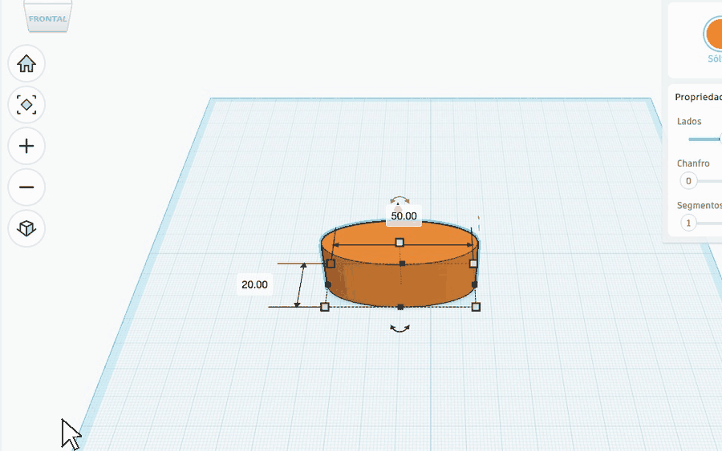
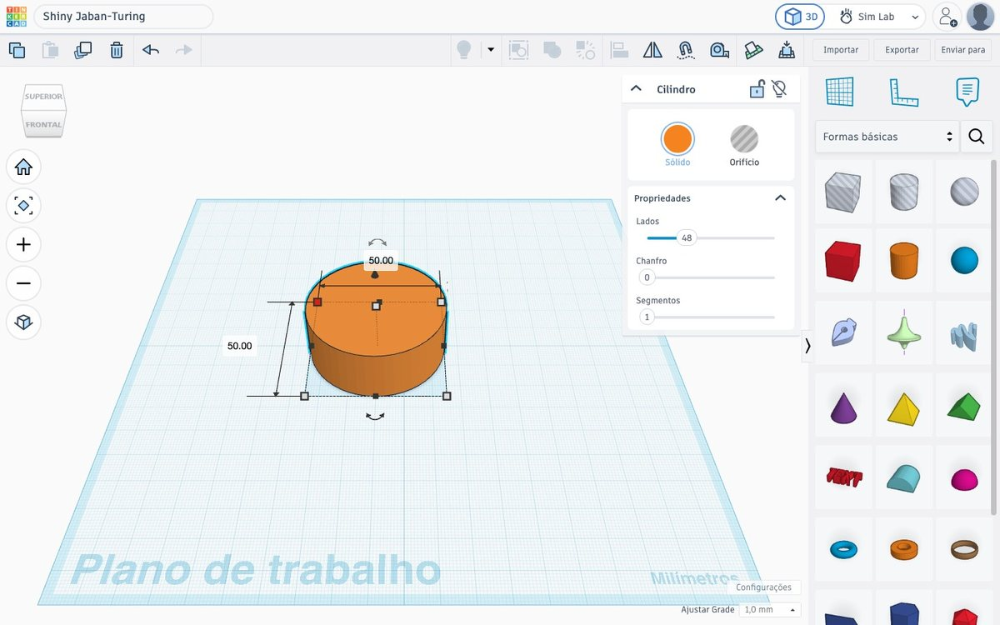
O clipe repete sozinho. Repare onde o cursor vai antes de clicar.
Foto da tela.
Clique no número que está à esquerda do cilindro, no plano, apague o 20, escreva 50 e aperte Enter.
Agora o cilindro tem 50 × 50: redondo de verdade. Se um número fosse diferente do outro, ele ficaria oval.
- Ficou oval
- Os dois números têm de ser iguais. Clique na alça do canto de novo e confira os dois.
- Digitei no número de cima de novo
- O da esquerda é o comprimento. O de cima você já fez no passo anterior.
Altura = 70: a alça de cima
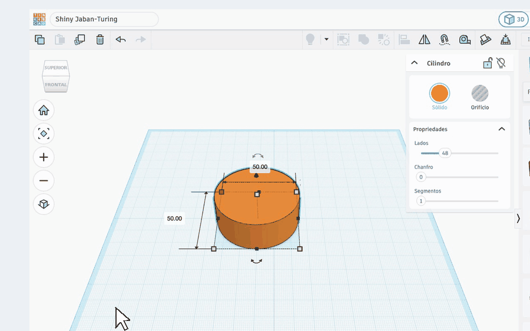
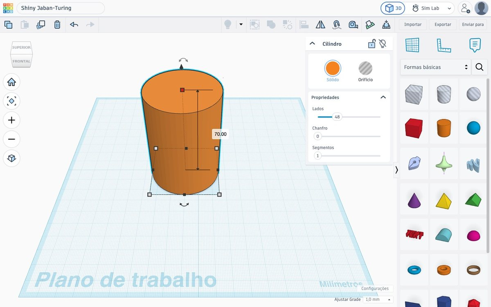
O clipe repete sozinho. Repare onde o cursor vai antes de clicar.
Foto da tela.
Clique no quadradinho do meio da tampa (o do centro, em cima do cilindro). Aparece um número, ao lado: a altura.
Clique nele, apague o 20, escreva 70 e aperte Enter.
O cilindro vira um tubo alto: o corpo do porta-lápis.
- Apareceram dois números
- Você clicou num quadradinho de canto. O da altura fica no meio da tampa de cima.
- A peça ficou altíssima
- O 20 antigo não foi apagado e o número virou outro (2070, por exemplo). Clique no número, aperte Ctrl + A (no Mac, Cmd + A), escreva 70 e Enter.
- Não achei o quadradinho do meio
- Aproxime com o + da barra da esquerda, ou clique na peça de novo para ver as alças.
Traga um segundo Cilindro, ao lado
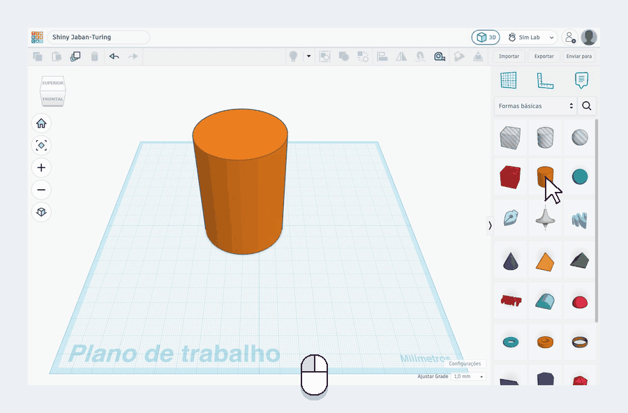
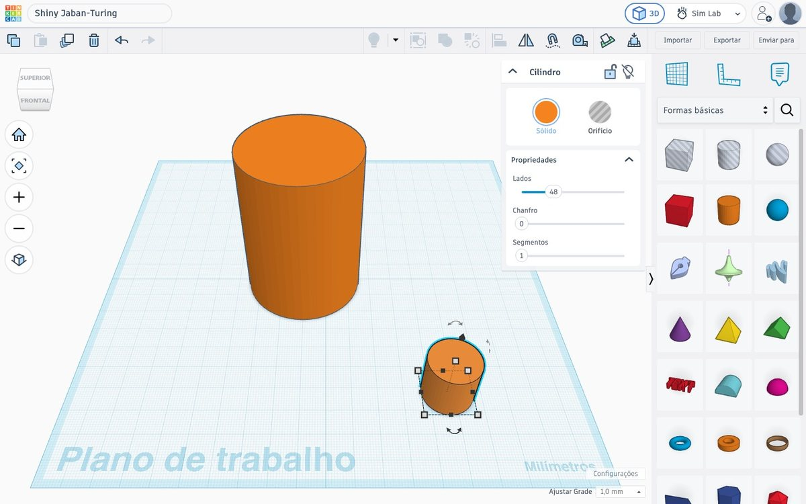
O clipe repete sozinho. Repare onde o cursor vai antes de clicar.
Foto da tela.
Clique num lugar vazio do plano (para soltar a seleção). Arraste outro Cilindro laranja da coluna da direita e solte no plano, ao lado do tubo — não em cima dele.
Esse segundo cilindro vai virar o buraco. Soltar em cima do tubo faria ele nascer lá no alto, na altura da tampa.
- O cilindro novo nasceu com outro tamanho
- Normal: ele nasce com o tamanho do último que você mexeu. Não importa: os passos seguintes dão o tamanho certo.
- O cilindro nasceu em cima do tubo
- Arraste-o para o plano, para longe do tubo. Ele precisa estar no chão.
- Soltei um cilindro cinza listrado
- Esse já é o buraco, e tudo bem: pule o passo seguinte. Mas ele nasce com o tamanho padrão: siga os passos de medida.
Transforme o cilindro em Orifício
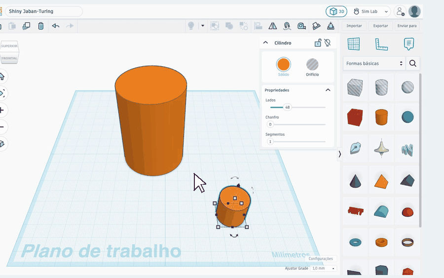
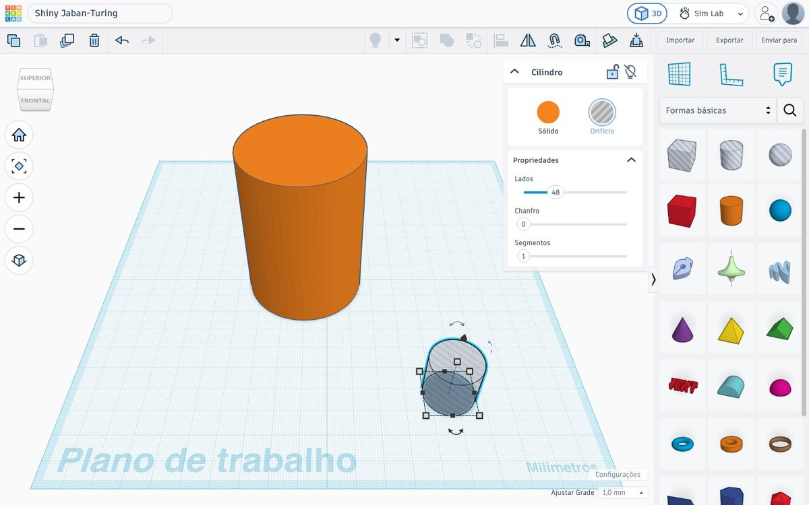
O clipe repete sozinho. Repare onde o cursor vai antes de clicar.
Foto da tela.
Com o cilindro pequeno selecionado, no painel branco clique em Orifício (a bolinha cinza listrada, à direita de Sólido).
O cilindro fica cinza e listrado: agora ele é um buraco — onde ele tocar uma peça sólida, vai cavar.
- Nada mudou de cor
- Clique na palavra ou na bolinha do Orifício, e confirme que o cilindro pequeno está selecionado (com as alças).
- O tubo é que ficou listrado
- Você estava com o tubo selecionado. Clique no Sólido para desfazer e selecione o cilindro pequeno.
Encolha o furo: 42 × 42
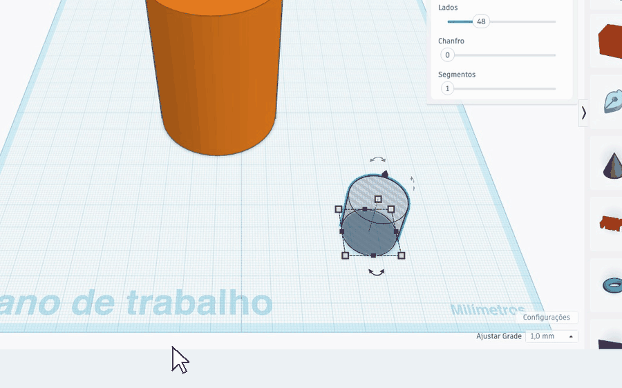
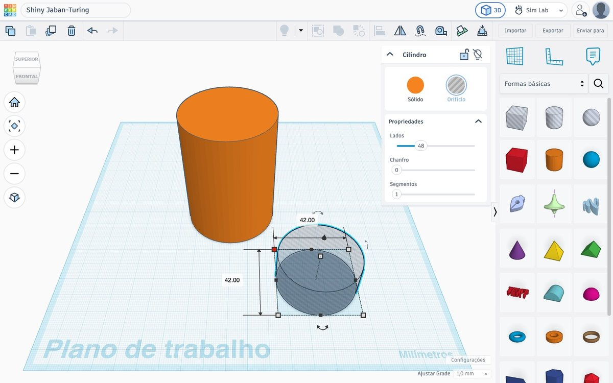
O clipe repete sozinho. Repare onde o cursor vai antes de clicar.
Foto da tela.
Com o furo selecionado, clique na alça do canto de cima à esquerda, como no passo 5. Clique no número da esquerda, escreva 42, Enter. Depois clique no número de cima, escreva 42, Enter.
O furo tem 42 mm de largura e o tubo tem 50: sobram 4 mm de parede de cada lado (50 − 42 = 8, e 8 ÷ 2 = 4).
- Digitei 42 e o tubo é que mudou
- Você estava com o tubo selecionado. Clique no furo (cinza listrado) e refaça.
- O furo ficou oval
- Os dois números têm de ser 42. Clique na alça do canto de novo e confira.
Altura do furo = 70
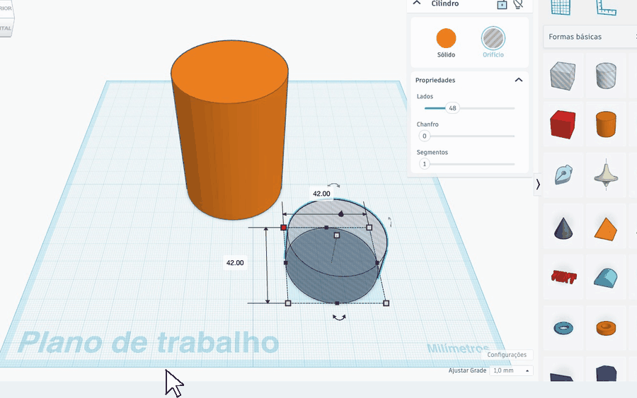
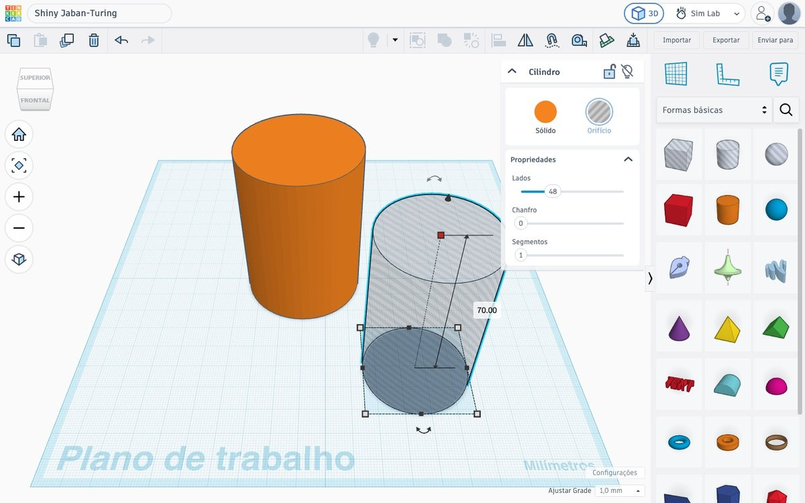
O clipe repete sozinho. Repare onde o cursor vai antes de clicar.
Foto da tela.
Clique na alça de cima — o quadradinho do meio da tampa do furo —, clique no número que aparece, escreva 70 e aperte Enter.
O furo fica tão alto quanto o tubo. Ele ainda está no chão: no próximo passo você levanta.
- O número é outro
- Se mostrar um valor diferente de 70, clique nele e escreva 70 de novo.
- Apareceram dois números
- Você clicou num canto. A altura fica no meio da tampa.
Suba o furo 5 mm: Ctrl + ↑, cinco vezes
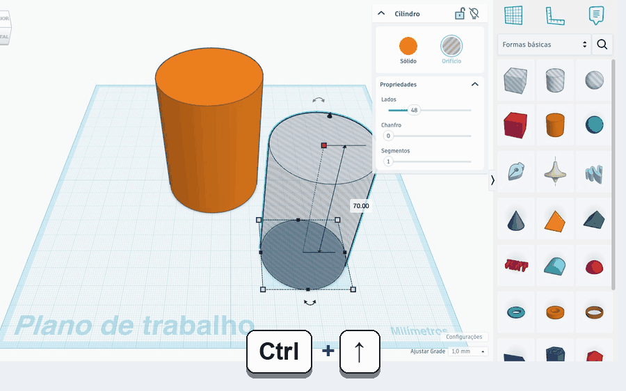
O clipe repete sozinho. Repare onde o cursor vai antes de clicar.
Foto da tela.
Com o furo ainda selecionado, aperte Ctrl + ↑ (a seta para cima) cinco vezes, uma por vez. Cada toque sobe a forma 1 mm.
Por quê? Se o furo ficar no chão, ele atravessa o tubo todo e sobra só um canudo, sem fundo. Subindo 5 mm, os 5 mm de baixo do tubo ficam inteiros: é o fundo do porta-lápis.
- Não subiu
- Confira se o furo continua selecionado (com as alças). No Mac use Ctrl mesmo, não o Cmd.
- Subiu demais ou de menos
- Cada toque é 1 mm. Aperte Ctrl + ↓ para descer um e Ctrl + ↑ para subir um, até dar 5 no total.
Selecione tudo: Ctrl + A
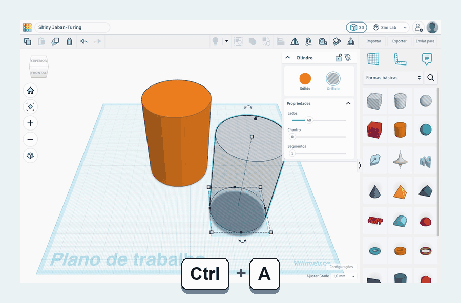
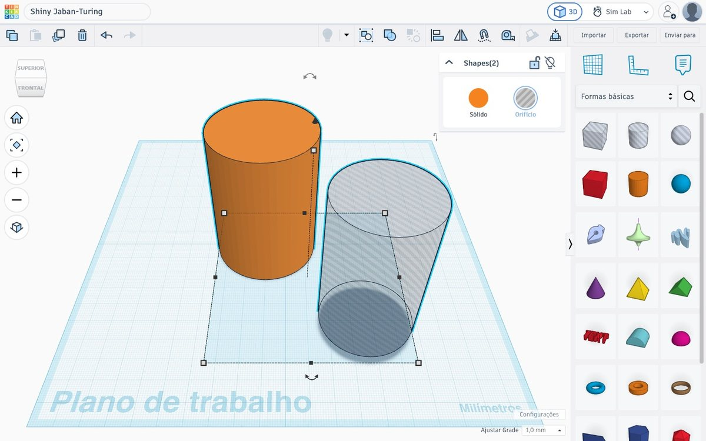
O clipe repete sozinho. Repare onde o cursor vai antes de clicar.
Foto da tela.
Aperte Ctrl + A. O tubo e o furo ficam selecionados juntos: o painel passa a dizer Shapes(2) (duas formas).
No Mac, aperte Cmd + A no lugar do Ctrl.
- Selecionou só uma
- Clique num lugar vazio do plano e aperte Ctrl + A de novo.
- Não aconteceu nada
- O Ctrl + A só funciona com a tela do editor em foco. Clique num lugar vazio do plano e tente de novo.
Abra o Alinhar
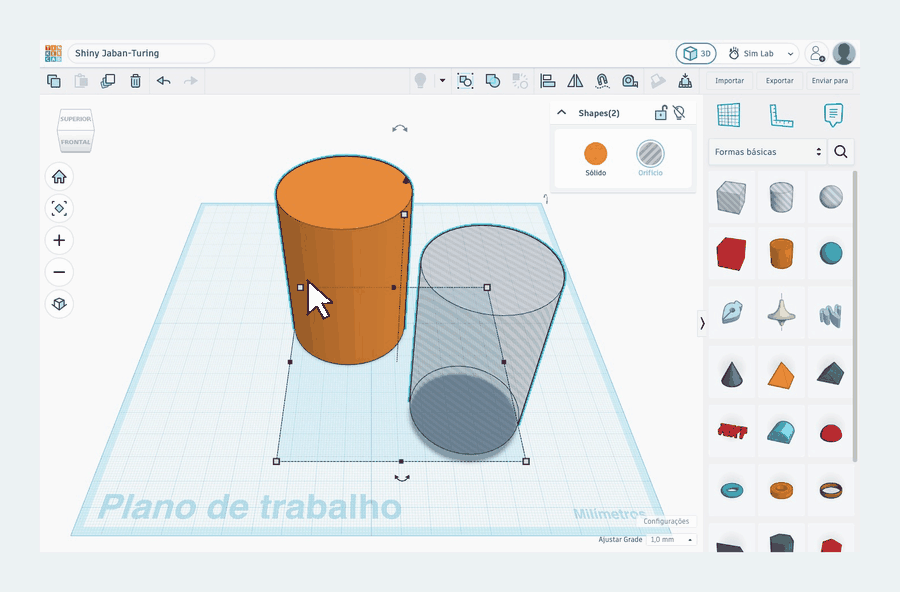
O clipe repete sozinho. Repare onde o cursor vai antes de clicar.
Foto da tela.
Na barra de cima, clique no botão Alinhar (o ícone com linhas de tamanhos diferentes, ao lado do espelho).
Aparecem nove bolinhas pretas em volta das formas: três embaixo (esquerda, meio e direita), três do lado esquerdo (frente, meio e atrás) e três do lado direito (altura). Cada bolinha alinha as duas formas por aquele lado.
- Não acho o botão Alinhar
- Fica na barra de cima, no meio, entre o ícone de agrupar e o do espelho. Passe o mouse e espere: o nome aparece.
- As bolinhas não apareceram
- O Alinhar só abre com duas ou mais formas selecionadas. Volte ao passo 14.
Centro em X: a bolinha do meio, embaixo
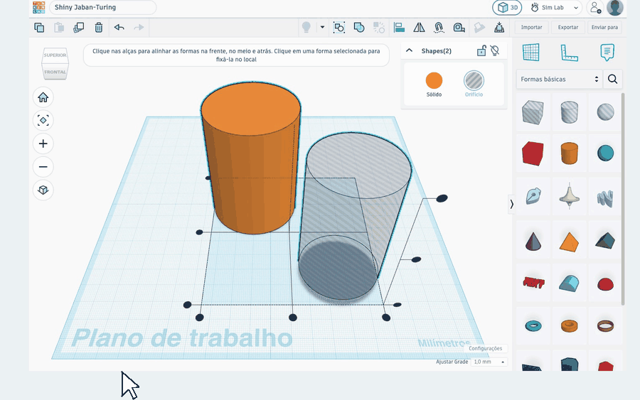
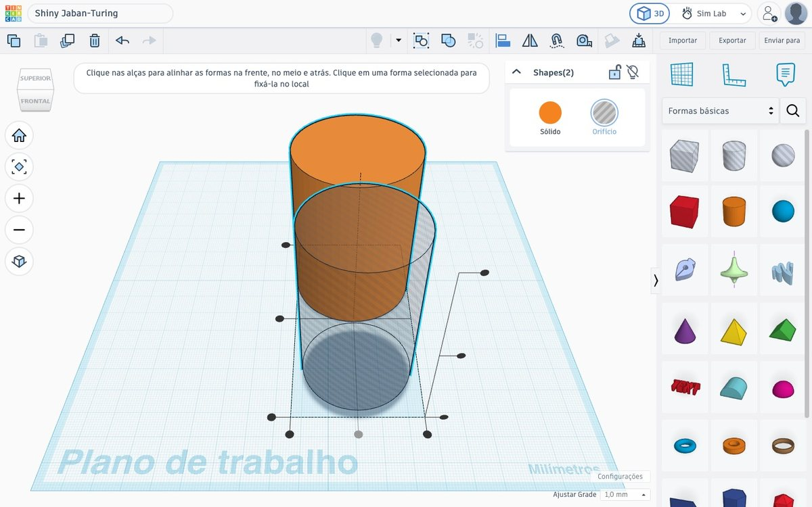
O clipe repete sozinho. Repare onde o cursor vai antes de clicar.
Foto da tela.
Clique na bolinha do meio da fileira de baixo.
As duas formas se centram na direção da esquerda para a direita: o furo se encaixa no meio do tubo, de lado a lado.
- Alinhou na esquerda, não no meio
- Você clicou na bolinha da ponta. Aperte Ctrl + Z e clique na do meio.
- As bolinhas mudaram de lugar
- É normal: depois de cada clique elas se reposicionam. Procure de novo a do meio.
Centro em Y: a bolinha do meio, à esquerda
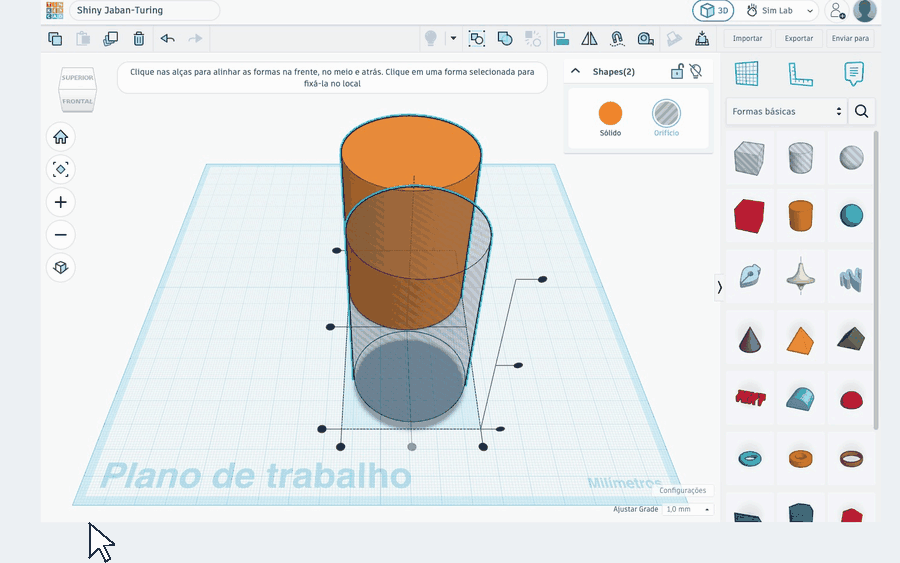
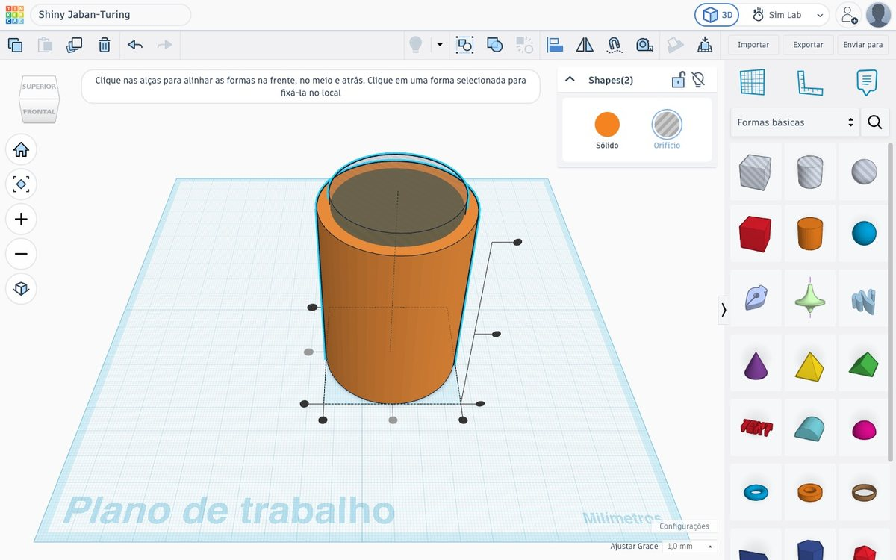
O clipe repete sozinho. Repare onde o cursor vai antes de clicar.
Foto da tela.
Clique na bolinha do meio da coluna da esquerda.
Agora o furo também está centrado de frente para trás. Olhando de cima, ele ficaria no meio exato do tubo — com 4 mm de parede por toda a volta.
- Clicou na bolinha errada
- Aperte Ctrl + Z e clique na do meio da coluna da esquerda.
- O furo ainda está torto
- Faça os dois passos: o do meio embaixo (passo 16) e o do meio à esquerda (este).
Aperte Esc e agrupe: Grupo de união
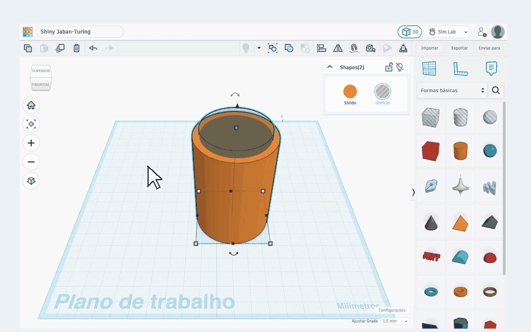
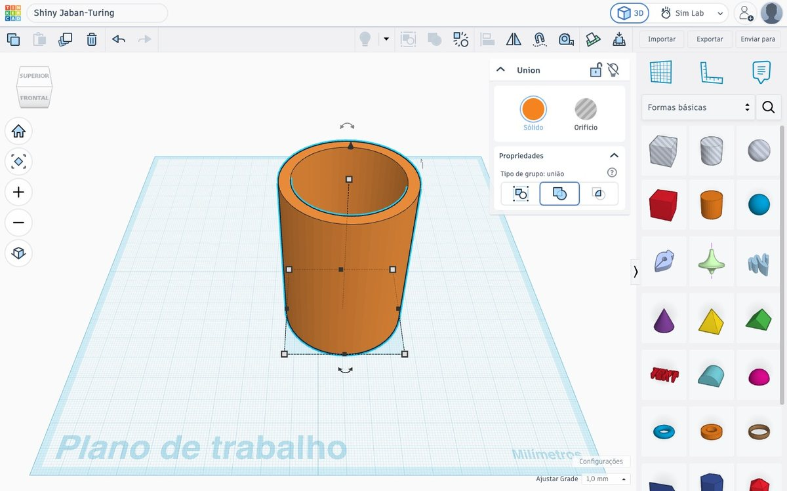
O clipe repete sozinho. Repare onde o cursor vai antes de clicar.
Foto da tela.
Primeiro aperte Esc: ele fecha o Alinhar e mantém as duas formas selecionadas. Sem isso o botão de agrupar não responde.
Na barra de cima há três botõezinhos de juntar peças, à direita do meio. Clique no do meio, o Grupo de união (ao passar o mouse aparece o nome).
O furo cava o tubo, e as duas formas viram uma peça só: o painel passa a dizer Union (união).
- O botão não respondeu
- Falta apertar Esc antes. Se as bolinhas pretas ainda estão na tela, o Alinhar não fechou.
- Cavou tudo e sobrou um canudo
- O furo ficou no chão. Aperte Ctrl + Z, selecione o furo e suba 5 mm (passo 13) antes de agrupar.
- Agrupei e sumiu o furo, sobrou o tubo inteiro
- Você usou o botão errado. Aperte Ctrl + Z e escolha o Grupo de união, e não o de ao lado.
Olhe de cima: o fundo ficou?
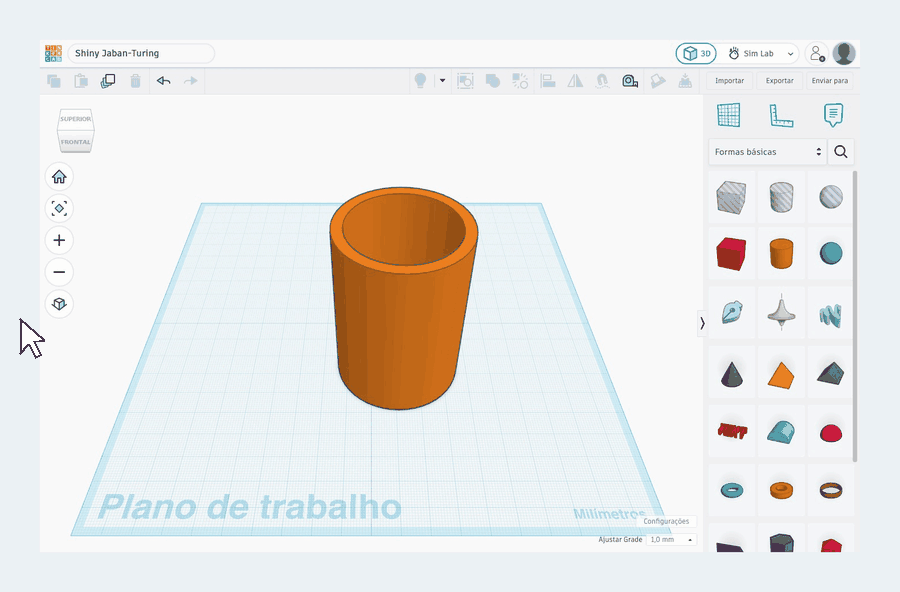
O clipe repete sozinho. Repare onde o cursor vai antes de clicar.
Foto da tela.
Clique num lugar vazio do plano para soltar a peça. No canto de cima à esquerda, no cubo de vistas, clique na face escrita SUPERIOR.
A câmera sobe e você olha de cima: o tubo é um anel de parede e, dentro dele, aparece o fundo laranja. Se desse para ver o plano branco no meio, o furo teria atravessado.
- Dá para ver o plano no meio do furo
- O furo atravessou: ficou no chão. Aperte Ctrl + Z até o furo voltar, suba 5 mm e agrupe de novo.
- A câmera não mudou
- Clique na palavra SUPERIOR do cubinho. Para voltar à vista inicial use a casinha da barra da esquerda.
- Está tudo laranja, não vejo anel
- Gire a câmera com o botão direito do mouse até enxergar a abertura em cima.
Dê um nome ao seu projeto
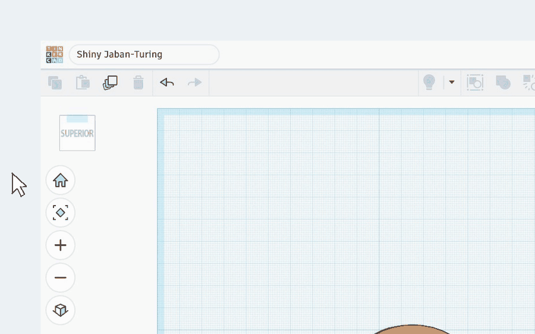
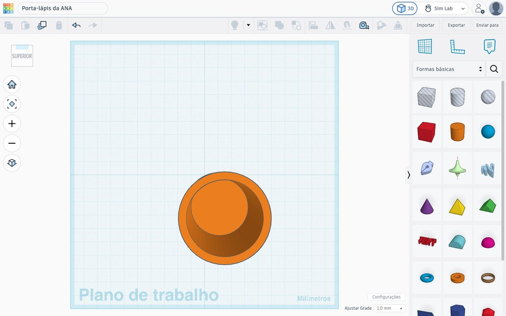
O clipe repete sozinho. Repare onde o cursor vai antes de clicar.
Foto da tela.
Clique no nome do projeto, no canto de cima à esquerda (o nome sorteado). Apague, escreva Porta-lápis da ANA (ou o seu nome) e aperte Enter. (A câmera pode continuar olhando de cima: não atrapalha.)
O Tinkercad salva sozinho. No outro dia, é só abrir o Tinkercad e a peça está lá.
- O nome não mudou
- Falta o Enter. Clique no nome de novo e faça de novo.
- Clicou e o campo não abriu
- Clique em cima das letras do nome, e não ao lado.